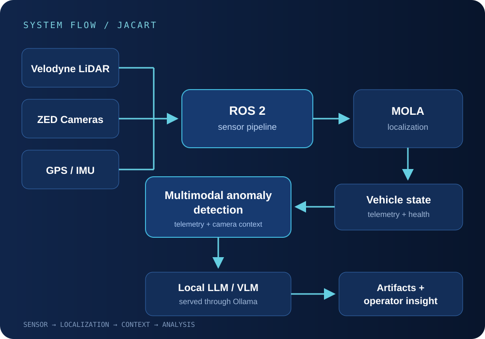

Research project
JACart Autonomous Vehicle / Multimodal Anomaly Detection
My work on JMU's autonomous research vehicle spans ROS 2 integration, LiDAR and cameras, localization, multimodal inference, and technical planning.

Overview
A research vehicle is a collection of systems that have to agree.
JACart combines networked sensors, ROS 2 nodes, localization, autonomy logic, and operator workflows. When the cart behaves unexpectedly, the cause may be stale localization, a missing point cloud, a camera configuration issue, a transform problem, Docker networking, or the physical hardware.
My role grew from cybersecurity research and subsystem development into collision-avoidance leadership and project management. I still work directly on integration, debugging, localization health, and the multimodal anomaly-monitoring workflow.
How the vehicle works
Sensors and localization feed the autonomy stack.
Velodyne LiDAR, ZED cameras, and GPS/IMU inputs publish into the ROS 2 graph. MOLA uses relevant sensor data for localization, while health signals and vehicle telemetry describe what the platform is seeing and how confidently it knows its position.
The anomaly workflow combines those signals with camera context and sends event-focused inputs to a locally served multimodal model through Ollama. The resulting artifacts are meant to help an operator investigate what happened around an abnormal condition.
My progression
My responsibilities expanded with my understanding of the platform.
Cybersecurity research
Investigated risk across networked vehicle components and learned how the hardware and software fit together.
Vehicle development
Worked on ROS 2 migration, LiDAR processing, hardware troubleshooting, networking, and controller-related development.
Collision-avoidance leadership
Coordinated work where sensor behavior, localization, and vehicle response had to be tested together.
Project Manager / Undergraduate Research Assistant
Translate faculty objectives into milestones and test plans while continuing hands-on work in anomaly detection, localization, and integration.
Sensor + localization integration
The hardest part was keeping the data path consistent across ROS 2 nodes.
I debugged ROS 2 topics, timestamps, transforms, discovery, and Docker networking across the LiDAR, ZED cameras, localization services, and vehicle computers. Duplicate nodes and stale publishers could make a healthy sensor look broken, while TF issues could make valid data unusable downstream.
I originally worked with NDT localization before the project migrated to MOLA ICP. That transition required checking sensor inputs, frame relationships, configuration, and localization-health signals instead of treating pose output as automatically trustworthy.
Multimodal anomaly detection
Operational events connect telemetry to camera context.
The workflow combines vehicle telemetry, localization health, and camera information around an event rather than sending every frame and message to a model. This keeps the input focused on the time window an operator needs to inspect.
I integrated locally served multimodal-model inference through Ollama into the anomaly-monitoring workflow. Local serving keeps the analysis near the vehicle and avoids a remote inference dependency, but it also requires careful use of compute and memory.
Problems we hit
Debugging usually crossed software and hardware boundaries.
- ROS 2 discovery: nodes could be running without seeing the publishers or services they needed.
- Sensor timing: LiDAR, camera, and localization data arrived at different rates, so stale data could look like a failed component.
- Duplicate nodes: old or repeated processes could publish conflicting data and make the graph difficult to reason about.
- TF issues: missing or incorrect transforms broke the relationship between sensor frames and the vehicle frame.
- Docker networking: container boundaries and host configuration affected discovery and service access.
- Camera configuration: device settings and stream availability had to match what downstream nodes expected.
- Localization reliability: pose output needed health and continuity checks before other systems could depend on it.
Current results
A steadier sensor pipeline and an integrated monitoring path
- Velodyne point-cloud processing was stabilized at approximately 10 Hz.
- The anomaly-monitoring workflow combines vehicle telemetry, localization context, and camera information.
- Locally served multimodal inference is integrated through Ollama.
- Project plans connect faculty research goals to milestones, testing priorities, documentation, and integration ownership.
Lessons
The fastest diagnosis often starts outside the node that looks broken.
Debugging the cart often meant checking topics, timestamps, transforms, duplicate processes, Docker networking, localization health, camera settings, and the hardware itself. Looking at the full data path was more useful than assuming the last node in the chain caused the problem.
Project leadership added a second lesson: the next interesting experiment is not always the next useful integration step. Shared interfaces, testable milestones, documentation, and clear ownership make it easier for separate research threads to meet on the vehicle.
Related work